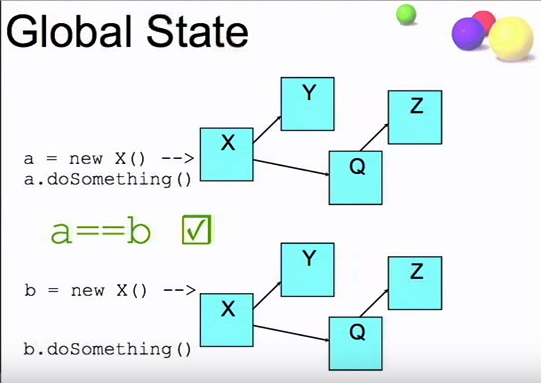
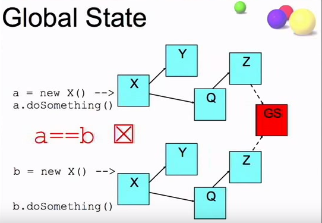

前言
本文是我看了 谷歌简洁代码演讲系列 中的 全局状态与单例模式 之后的总结。本文的主题是：避免全局可变状态。下面我们将围绕几个问题开展讨论：
- 什么是全局状态
- 如何设计好的单例模式
- 如何设计好的 API
全局状态
什么是全局状态
Talk is cheap, show me the code. -- Linus
我们来用一个例子说明什么是全局状态。
class X {
X() {...}
public int doSomething() {...}
}
int a = new X().doSomething()
int b = new X().doSomething()
现在问题来了，a 等于 b 吗？事实上有两种可能的情况。
第一种情况：X 类不受全局状态的影响，此时 a == b

当 X 被实例化时，它可能会同时创建多个其它对象，当它执行 doSomething() 的时候，得到的结果是一样。说明它是无状态的，每次执行都像 1+1=2 一样有一个确定的值。
第二种情况：X 类受到全局状态的影响，此时 a != b

如果 X 在执行 doSomething() 的时候，其中的 Z 变量受到全局状态 GS 的影响，此时 a==b 可能就不成立了。因为程序的执行依赖全局状态，同样的方法可能会得到不同的结果。
全局状态的缺点
全局状态相当常见，因为写起来方便。“啊，有一个新的功能要加入，我们加一个全局变量，再加一个条件语句跳转到新的方法就行了。”然而，这种方便却让程序变得难以维护和测试。所以，有一定经验的程序员都会认为全局状态令人讨厌，会避免使用它。
下面我们来列举全局状态的罪状：
- 多次执行同一方法会产生不同的结果
- 测试无法给出一个可靠的结果
- 测试的顺序会影响到结果
- 不能并行进行测试
- 很难确定设置状态的位置
总之，从测试的角度来看，全局状态是很可怕的东西。
全局状态和全局变量的区别
- 全局状态不仅包括了全局变量，还包括系统的环境变量，以及人为的命令等。
- 全局变量是在程序生命周期中全局可访问的变量，常用来表示全局状态。
单例模式
有些程序员讨厌全局状态，却喜欢单例模式。但是，从某种意义上说，单例模式是另一种全局状态。当然我不是一棍子打死单例模式，应该说，写得不好的单例模式起到的作用就如同全局状态，让程序难以维护和测试。下面我们来讨论什么是好的单例模式，什么是坏的单例模式
坏的单例模式
下面是典型的单例模式实现。
class AppSetting {
private static AppSetting instance = new AppSetting();
private Object state1;
private Object state2;
private Object state3;
private AppSetting() {...}
public static AppSetting getInstance() {
return instance;
}
}
我们先来思考一个问题：这个类包括了多少个全局变量？你可能觉得只有一个 instance，事实上一共有4个。只要 instance 一直存在，它的成员变量也会一直存在。也就是说一共有四个全局变量：state1, state2, state3, instance。
class App {
int method() {
return AppSetting.getInstance().doX();
}
}
void testApp {
???
}
想想我们怎么测试上面的代码。单例模式下，你没有缝隙进入到 method() 函数中测试。
上面的单例模式存在一个很大的测试问题：测试无法覆盖所有的状态。因为状态是私有，同时它单例的。如果我们要测试三个状态怎么办，一个解决办法是在测试的时候把状态改为公有的。这看起来有点诡异，我们一方面又想用单例封装状态，一方面却在测试的时候要去修改代码让它的状态公有。可以说，这种单例模式给测试带来了极大的麻烦。
好的单例模式
那么，什么是好的单例模式呢？看下面的代码。
class AppSetting {
private Object state1;
private Object state2;
private Object state3;
public AppSetting() {...}
}
第一眼看到这个代码，你可能觉得这哪里是单例模式，明明就是个普通的类。
是的，它的确是个普通的类。在这里我们让它不再着重于类自身的单例。什么意思？想想单例模式的本质是什么，单例模式主要是类保证在程序的生命周期内只有一个实例，其它对象访问到的是同一个实例。我们来看看，这种模式对测试带来了怎样的便利。
class App {
AppSetting settings;
App(AppSetting settings) {
this.settings = settings;
}
int method() {
return settings.doX();
}
}
void testApp() {
new App(new AppSetting(...)).method();
}
每个测试我们可以提供一个不同的 AppSetting 来进行测试，相比上面的单例模式，测试得到了更多的控制。我们可以通过不同的 AppSetting 的构造函数，改变程序的状态来进行测试。
看到这里，你可能有一个疑问：这样子写的代码根本就不是单例模式。的确，从类的实现上，AppSetting 的确不是单例模式的。这里我们强调的是逻辑上的单例，而不是代码实现上的单例。怎么理解？
首先，单例模式的传统实现是由类来管理这个唯一的实例，也就是我们上面说的“坏的单例模式”，而“好的单例模式”则是由程序来控制类的唯一实例，例如说，Spring IoC 容器中的 Bean，在容器的生命周期中，Bean 默认是单例的。（详细的解释可以看这篇文章 控制反转（IoC）与依赖注入（DI））简单说，就是把单例类管理唯一实例的功能转移给外部容器，当你使用了 IoC 框架之后，你会发现，单例模式的实例完全可以通过容器管理，而不用我们写“坏的单例模式”。
设计好的 API
全局状态同样会影响到 API 的好坏。
坏的 API
我们来看一个坏的 API。
testCharge() {
Database.connect();
OfflineQueue.start();
CreditCardProcessor.init();
CreditCard cc = new CreditCard("123");
cc.charge(100);
}
如果你对单例模式的坏处还没完全理解，或者你也喜欢写这样的代码，那么刷新编程观的时候到了。
上面是一个信用卡测试消费的例子。在实例化 CreditCard 之前要有三个初始化操作（明显都是单例模式）。现在问题来了：如果你是新来的测试人员，让你去测试 CreditCard，你看了 API 文档之后，兴冲冲地写下一些代码。
testCharge() {
CreditCard cc = new CreditCard("123");
cc.charge(100);
}
现在满怀期待的运行，结果却是熟悉的 NullPointerException。为什么？新来的你当然不知道创建 CreditCard 之前要先连接数据库，启动离线队列，初始化信用卡处理器。所以你只能去问开发人员。现在你知道问题出在哪了吗？
坏的单例模式让测试人员很难测试代码，因为你看了 API 之后只知道要实例化 CreditCard，然后调用 charge，完全不知道 Database 之类的全局状态是什么鬼。不要以为这只会为难到测试人员，六个月之后你就能体验到测试人员的痛苦。因此，全局状态让 API 有了误导性，让你以为做了正确的操作。
当然，文档写的清楚可以解决这个问题，然而好的文档可遇不可求，所以我们要有更好的解决办法。
好的 API
设计好的 API，可以从代码层面上解决上面的问题，所谓代码就是最好的注释。
testCharge() {
db = new Database(...);
queue = new OfflineQueue(db);
ccProc = new CreditCardProcessor(queue);
CreditCard cc = new CreditCard("123", ccProc);
cc.charge(100);
}
上面的代码通过让依赖参数化完美地解决上面的问题。现在，我们还是那个新来的测试人员，我们开始写测试代码。API 告诉我们，实例化 CreditCard 需要 CreditCardProcessor 作为参数，CreditCardProcessor需要 OfflineQueue，OfflineQueue 需要 Database。于是我们可以很清楚的写下上面的测试代码，不需要文档的辅助，我们也知道如何正确的使用 CreditCard。这就是好的 API 设计。
如果我们要让上面的配置类单例化，只需要使用 IoC 容器进行管理即可，通过依赖注入的方式，可以使代码更加清晰，易测试。
总结
- 全局状态是大多数测试问题的根源。
- 全局状态无法被测试控制，无法控制意味着无法进行彻底的测试。
- 单例模式是封装了全局状态的常用形式。这也是我们不提倡使用单例模式的原因，推荐用容器管理的单例模式。
- 全局状态会让 API 具有误导性。
参考资料
全局状态与单例模式